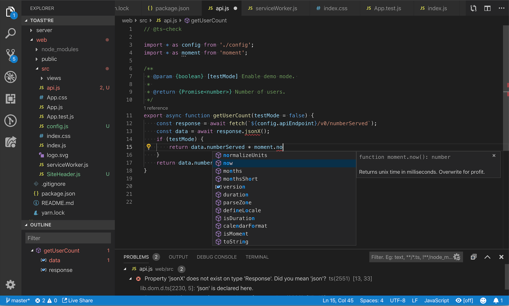

JavaScript in Visual Studio Code
Visual Studio Code includes built-in JavaScript IntelliSense, debugging, formatting, code navigation, refactorings, and many other advanced language features.

Most of these features just work out of the box, while some may require basic configuration to get the best experience. This page summarizes the JavaScript features that VS Code ships with. Extensions from the VS Code Marketplace can augment or change most of these built-in features. For a more in-depth guide on how these features work and can be configured, see Working with JavaScript.
IntelliSense
IntelliSense shows you intelligent code completion, hover info, and signature information so that you can write code more quickly and correctly.
VS Code provides IntelliSense within your JavaScript projects; for many npm libraries such as React, lodash, and express; and for other platforms such as node, serverless, or IoT.
See Working with JavaScript for information about VS Code's JavaScript IntelliSense, how to configure it, and help troubleshooting common IntelliSense problems.
JavaScript projects (jsconfig.json)
A jsconfig.json file defines a JavaScript project in VS Code. While jsconfig.json files are not required, you will want to create one in cases such as:
- If not all JavaScript files in your workspace should be considered part of a single JavaScript project.
jsconfig.jsonfiles let you exclude some files from showing up in IntelliSense. - To ensure that a subset of JavaScript files in your workspace is treated as a single project. This is useful if you are working with legacy code that uses implicit globals dependencies instead of
importsfor dependencies. - If your workspace contains more than one project context, such as front-end and back-end JavaScript code. For multi-project workspaces, create a
jsconfig.jsonat the root folder of each project. - You are using the TypeScript compiler to down-level compile JavaScript source code.
To define a basic JavaScript project, add a jsconfig.json at the root of your workspace:
{
"compilerOptions": {
"module": "commonjs",
"target": "es6"
},
"exclude": [
"node_modules"
]
}
See Working with JavaScript for more advanced jsconfig.json configuration.
Tip: To check if a JavaScript file is part of JavaScript project, just open the file in VS Code and run the JavaScript: Go to Project Configuration command. This command opens the
jsconfig.jsonthat references the JavaScript file. A notification is shown if the file is not part of anyjsconfig.jsonproject.
Snippets
VS Code includes basic JavaScript snippets that are suggested as you type;
There are many extensions that provide additional snippets, including snippets for popular frameworks such as Redux or Angular. You can even define your own snippets.
Tip: To disable snippets suggestions, set
editor.snippetSuggestionsto"none"in your settings file. Theeditor.snippetSuggestionssetting also lets you change where snippets appear in the suggestions: at the top ("top"), at the bottom ("bottom"), or inlined ordered alphabetically ("inline"). The default is"inline".
JSDoc support
VS Code understands many standard JSDoc annotations, and uses these annotations to provide rich IntelliSense. You can optionally even use the type information from JSDoc comments to type check your JavaScript.
Quickly create JSDoc comments for functions by typing /** before the function declaration, and select the JSDoc comment snippet suggestion:
To disable JSDoc comment suggestions, set "javascript.suggest.completeJSDocs": false.
Hover Information
Hover over a JavaScript symbol to quickly see its type information and relevant documentation.

The kb(editor.action.showHover) keyboard shortcut shows this hover info at the current cursor position.
Signature Help
As you write JavaScript function calls, VS Code shows information about the function signature and highlights the parameter that you are currently completing:
Signature help is shown automatically when you type a ( or , within a function call. Press kb(editor.action.triggerParameterHints) to manually trigger signature help.
Auto imports
Automatic imports speed up coding by suggesting available variables throughout your project and its dependencies. When you select one of these suggestions, VS Code automatically adds an import for it to the top of the file.
Just start typing to see suggestions for all available JavaScript symbols in your current project. Auto import suggestions show where they will be imported from:
If you choose one of these auto import suggestions, VS Code adds an import for it.
In this example, VS Code adds an import for Button from material-ui to the top of the file:
To disable auto imports, set "javascript.suggest.autoImports" to false.
Tip: VS Code tries to infer the best import style to use. You can explicitly configure the preferred quote style and path style for imports added to your code with the
javascript.preferences.quoteStyleandjavascript.preferences.importModuleSpecifiersettings.
Formatting
VS Code's built-in JavaScript formatter providers basic code formatting with reasonable defaults.
The javascript.format.* settings configure the built-in formatter. Or, if the built-in formatter is getting in the way, set "javascript.format.enable" to false to disable it.
For more specialized code formatting styles, try installing one of the JavaScript formatting extensions from the Marketplace.
JSX and auto closing tags
All of VS Code's JavaScript features also work with JSX:
You can use JSX syntax in both normal *.js files and in *.jsx files.
VS Code also includes JSX-specific features such as autoclosing of JSX tags:
Set "javascript.autoClosingTags" to false to disable JSX tag closing.
Code navigation
Code navigation lets you quickly navigate JavaScript projects.
- Go To Definition
kb(editor.action.revealDefinition)- Go to the source code of a symbol definition. - Peek Definition
kb(editor.action.peekDefinition)- Bring up a Peek window that shows the definition of a symbol. - Go to References
kb(editor.action.goToReferences)- Show all references to a symbol. - Go to Type Definition
kb(editor.action.goToTypeDefinition)- Go to the type that defines a symbol. For an instance of a class, this will reveal the class itself instead of where the instance is defined.
You can navigate via symbol search using the Go to Symbol commands from the Command Palette (kb(workbench.action.showCommands)).
- Go to Symbol in File
kb(workbench.action.gotoSymbol) - Go to Symbol in Workspace
kb(workbench.action.showAllSymbols)
Rename
Press kb(editor.action.rename) to rename the symbol under the cursor across your JavaScript project:

Refactoring
VS Code includes some handy refactorings for JavaScript such as Extract function and Extract constant. Just select the source code you'd like to extract and then click on the lightbulb in the gutter or press (kb(editor.action.quickFix)) to see available refactorings.
Available refactorings include:
- Extract to method or function.
- Extract to constant.
- Convert between named imports and namespace imports.
- Move to new file.
See Refactorings for more information about refactorings and how you can configure keyboard shortcuts for individual refactorings.
Unused variables and unreachable code
Unused JavaScript code, such the else block of an if statement that is always true or an unreferenced import, is faded out in the editor:
You can quickly remove this unused code by placing the cursor on it and triggering the Quick Fix command (kb(editor.action.quickFix)) or clicking on the lightbulb.
To disable fading out of unused code, set "editor.showUnused" to false. You can also disable fading of unused code only in JavaScript by setting:
"[javascript]": {
"editor.showUnused": false
},
"[javascriptreact]": {
"editor.showUnused": false
},
Organize Imports
The Organize Imports Source Action sorts the imports in a JavaScript file and removes any unused imports:
You can run Organize Imports from the Source Action context menu or with the kb(editor.action.organizeImports) keyboard shortcut.
Organize imports can also be done automatically when you save a JavaScript file by setting:
"editor.codeActionsOnSave": {
"source.organizeImports": true
}
Code Actions on Save
The editor.codeActionsOnSave setting lets you configure a set of Code Actions that are run when a file is saved. For example, you can enable organize imports on save by setting:
// On save, run both fixAll and organizeImports source actions
"editor.codeActionsOnSave": {
"source.fixAll": true,
"source.organizeImports": true,
}
You can also set editor.codeActionsOnSave to an array of Code Actions to execute in order.
Here are some source actions:
"organizeImports"- Enables organize imports on save."fixAll"- Auto Fix on Save computes all possible fixes in one round (for all providers including ESLint)."fixAll.eslint"- Auto Fix only for ESLint."addMissingImports"- Adds all missing imports on save.
See Node.js/JavaScript for more information.
Code suggestions
VS Code automatically suggests some common code simplifications such as converting a chain of .then calls on a promise to use async and await
Set "javascript.suggestionActions.enabled" to false to disable suggestions.
References CodeLens
The JavaScript references CodeLens displays an inline count of reference for classes, methods, properties, and exported objects:

To enable the references CodeLens, set "javascript.referencesCodeLens.enabled" to true.
Click on the reference count to quickly browse a list of references:

Update imports on file move
When you move or rename a file that is imported by other files in your JavaScript project, VS Code can automatically update all import paths that reference the moved file:
The javascript.updateImportsOnFileMove.enabled setting controls this behavior. Valid settings values are:
"prompt"- The default. Asks if paths should be updated for each file move."always"- Always automatically update paths."never"- Do not update paths automatically and do not prompt.
Linters
Linters provides warnings for suspicious looking code. While VS Code does not include a built-in JavaScript linter, many JavaScript linter extensions available in the marketplace.
Tip: This list is dynamically queried from the VS Code Marketplace. Read the description and reviews to decide if the extension is right for you.
Type checking
You can leverage some of TypeScript's advanced type checking and error reporting functionality in regular JavaScript files too. This is a great way to catch common programming mistakes. These type checks also enable some exciting Quick Fixes for JavaScript, including Add missing import and Add missing property.

TypeScript tried to infer types in .js files the same way it does in .ts files. When types cannot be inferred, they can be specified explicitly with JSDoc comments. You can read more about how TypeScript uses JSDoc for JavaScript type checking in Working with JavaScript.
Type checking of JavaScript is optional and opt-in. Existing JavaScript validation tools such as ESLint can be used alongside built-in type checking functionality.
Debugging
VS Code comes with great debugging support for JavaScript. Set breakpoints, inspect objects, navigate the call stack, and execute code in the Debug Console. See the Debugging topic to learn more.
Debug client side
You can debug your client-side code using a browser debugger such as our built-in debugger for Edge and Chrome, or the Debugger for Firefox.
Debug server side
Debug Node.js in VS Code using the built-in debugger. Setup is easy and there is a Node.js debugging tutorial to help you.

Popular extensions
VS Code ships with excellent support for JavaScript but you can additionally install debuggers, snippets, linters, and other JavaScript tools through extensions.
Tip: The extensions shown above are dynamically queried. Click on an extension tile above to read the description and reviews to decide which extension is best for you. See more in the Marketplace.
Next steps
Read on to find out about:
- Working with JavaScript - More detailed information about VS Code's JavaScript support and how to troubleshoot common issues.
- jsconfig.json - Detailed description of the
jsconfig.jsonproject file. - IntelliSense - Learn more about IntelliSense and how to use it effectively for your language.
- Debugging - Learn how to set up debugging for your application.
- Node.js - A walkthrough to create an Express Node.js application.
- TypeScript - VS Code has great support for TypeScript, which brings structure and strong typing to your JavaScript code.
Watch these introductory videos:
- IntelliSense - Tutorial on IntelliSense with JavaScript.
- Debugging - Learn how to debug a Node.js application.
Common questions
Does VS Code support JSX and React Native?
VS Code supports JSX and React Native. You will get IntelliSense for React/JSX and React Native from automatically downloaded type declaration (typings) files from the npmjs type declaration file repository. Additionally, you can install the popular React Native extension from the Marketplace.
To enable ES6 import statements for React Native, you need to set the allowSyntheticDefaultImports compiler option to true. This tells the compiler to create synthetic default members and you get IntelliSense. React Native uses Babel behind the scenes to create the proper run-time code with default members. If you also want to do debugging of React Native code, you can install the React Native Extension.
Does VS Code support the Dart programming language and the Flutter framework?
Yes, there are VS Code extensions for both Dart and Flutter development. You can learn more at the Flutter.dev documentation.
IntelliSense is not working for external libraries
Automatic Type Acquisition works for dependencies downloaded by npm (specified in package.json), Bower (specified in bower.json), and for many of the most common libraries listed in your folder structure (for example jquery-3.1.1.min.js).
ES6 Style imports are not working.
When you want to use ES6 style imports but some type declaration (typings) files do not yet use ES6 style exports, then set the TypeScript compiler option allowSyntheticDefaultImports to true.
{
"compilerOptions": {
"module": "commonjs",
"target": "es6",
// This is the line you want to add
"allowSyntheticDefaultImports": true
},
"exclude": [
"node_modules",
"**/node_modules/*"
]
}
Can I debug minified/uglified JavaScript?
Yes, you can. You can see this working using JavaScript source maps in the Node.js Debugging topic.
How do I disable Syntax Validation when using non-ES6 constructs?
Some users want to use syntax constructs like the proposed pipeline (|>) operator. However, these are currently not supported by VS Code's JavaScript language service and are flagged as errors. For users who still want to use these future features, we provide the javascript.validate.enable setting.
With javascript.validate.enable: false, you disable all built-in syntax checking. If you do this, we recommend that you use a linter like ESLint to validate your source code.
Can I use other JavaScript tools like Flow?
Yes, but some of Flow's language features such as type and error checking may interfere with VS Code's built-in JavaScript support. To learn how to disable VS Code's built-in JavaScript support, see Disable JavaScript support.